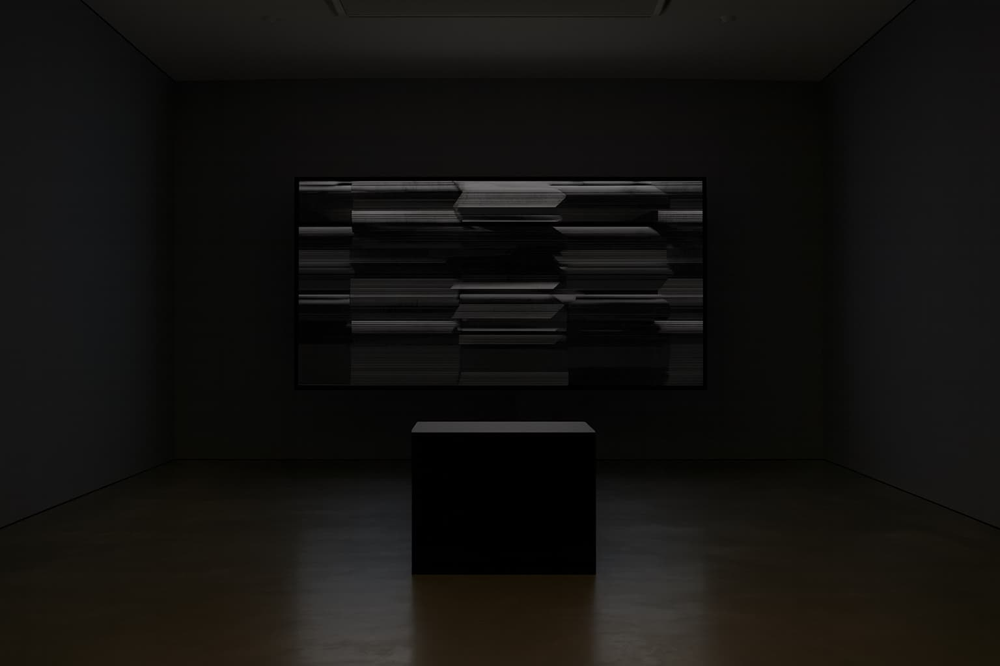
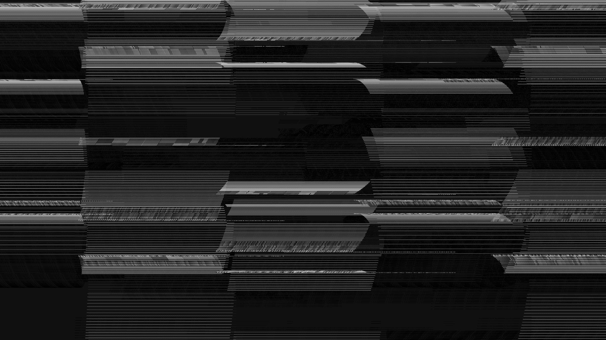
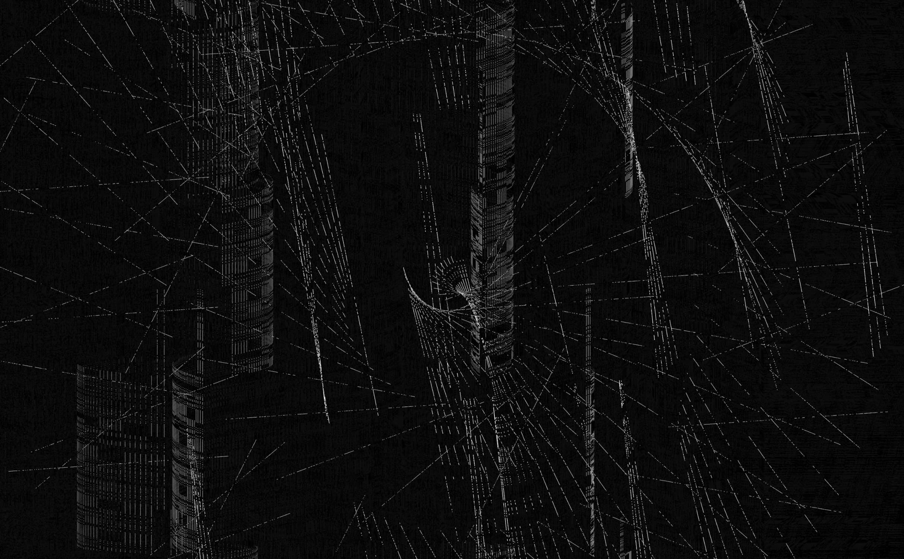

×
Digital Programs, Audio-Visual, Interactive Images and Sounds • 2025



We find ourselves at a historical crossroads where the accumulation of digital data has surpassed our capacity to remember. Digital Wasteland is an interactive generative installation that interrogates the fragile boundary between information saturation and collective amnesia. Inspired by T. S. Eliot’s modernist masterpiece, it reimagines the contemporary wasteland not as a physical barrenness but as a digital landscape where meaning is incessantly consumed, decomposed, and rendered obsolete.
In this continuously interactive audiovisual performance, participants contribute fragments of thought—documents, messages, or fleeting reflections—via their mobile devices. Instead of being archived, these contributions are immediately ingested by an algorithmic system that strips them of semantics and converts them into Bytebeat-generated noise and pulsating visual traces. Personal memory becomes a binary vibration, a residual afterimage in an endless flow of data.
By transforming human expression into digital noise, the work asks whether recording in the age of total capture leads to remembering or accelerates a new form of digital dementia. It turns public space into a site of active forgetting and confronts the audience with the sensory alienation of our information age.